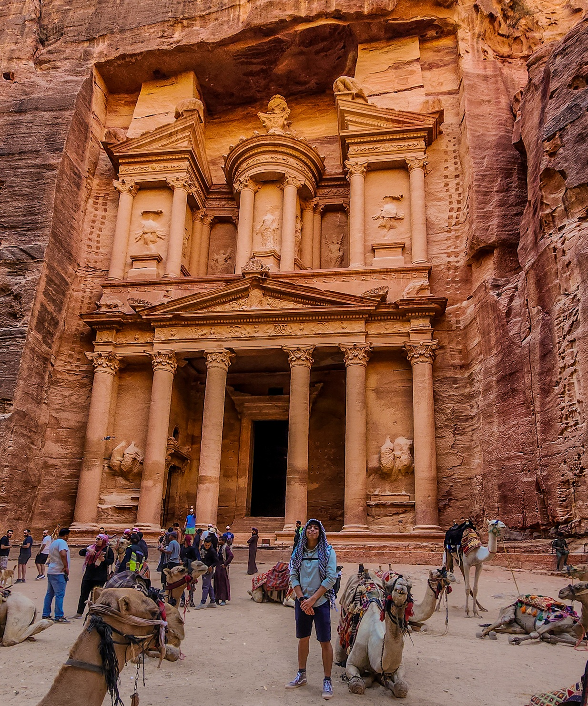
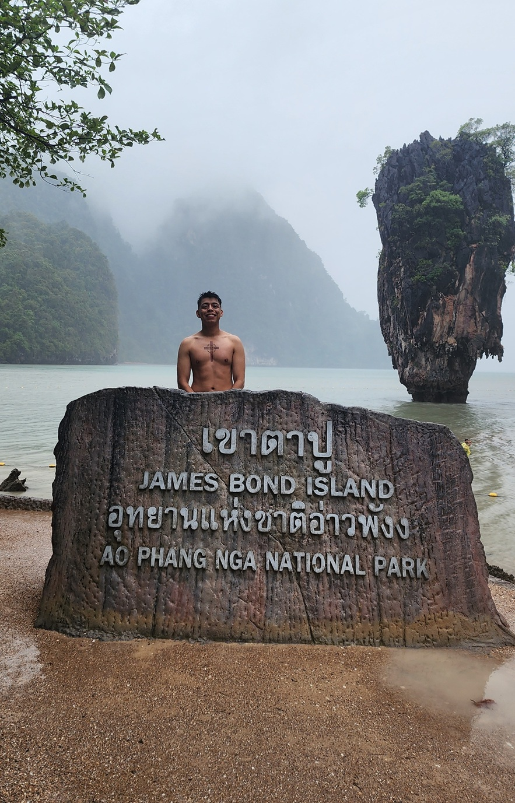
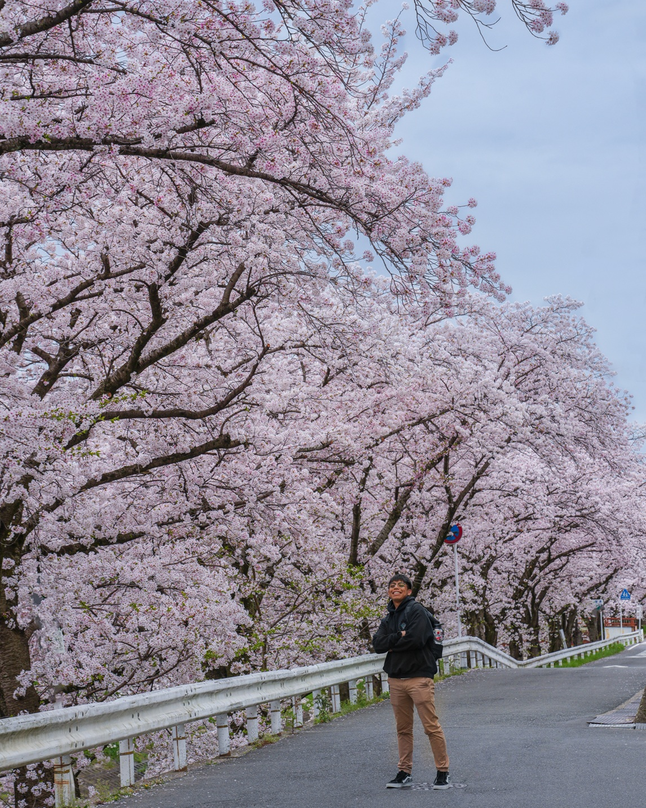
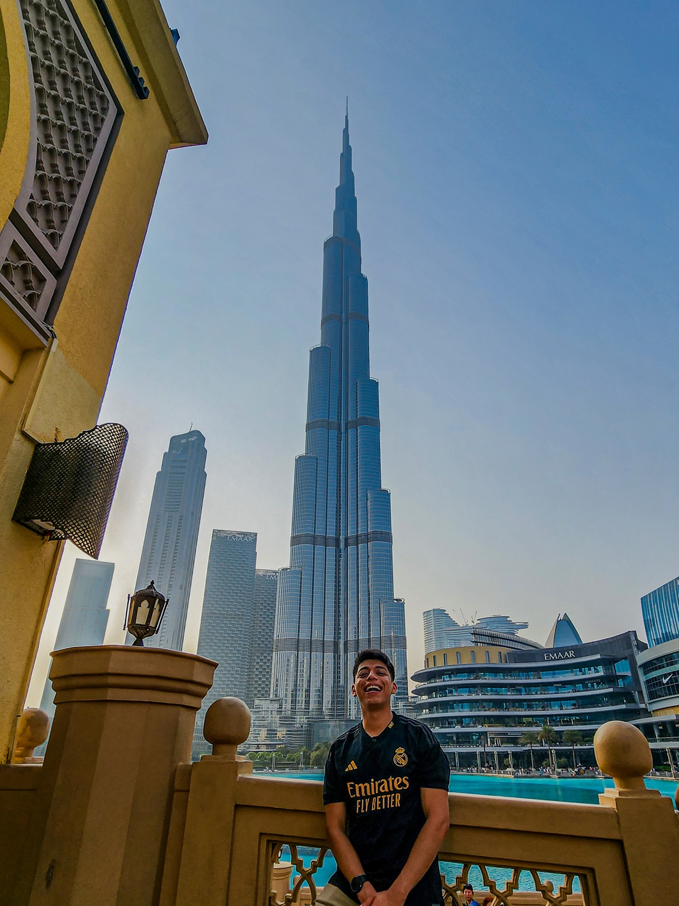
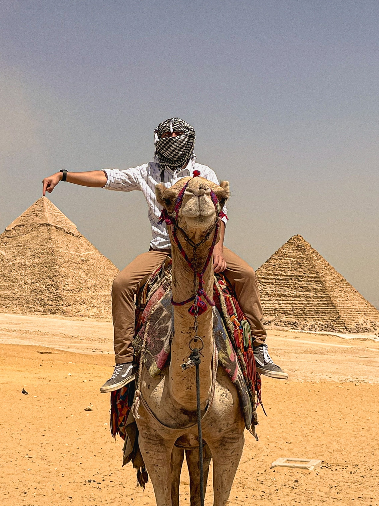
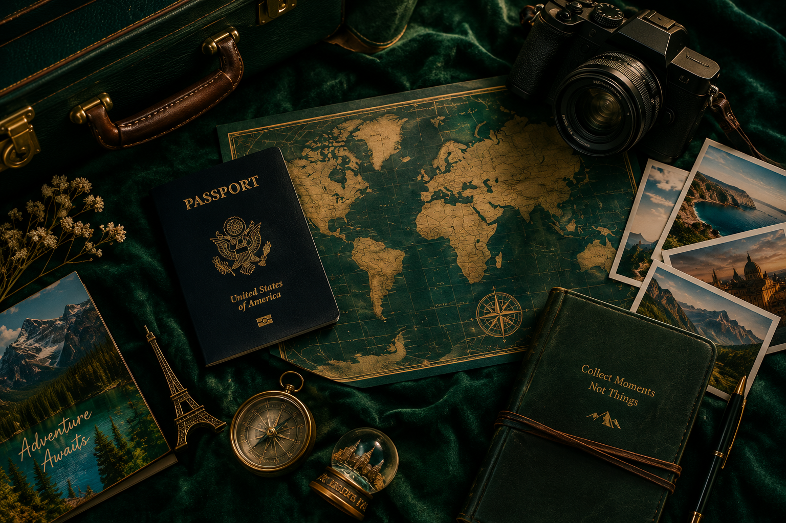

What
Travel is one of my favorite ways to experience the world. Traveling allows me to see places that are different from what I am used to and experience different cultures, food, people, and environments.

Exploring
One of the most exciting parts of traveling is exploring places that I have never seen before. Even simple walks around a new city can turn into memorable experiences.
Experiencing Culture
Traveling gives me the opportunity to experience different traditions, languages, food, architecture, and ways of life.
Trying Local Food
Food is one of the easiest ways to understand a place. Visiting local markets, street stalls, and family-run restaurants lets me taste dishes I cannot find at home and learn the stories behind them.
Making Memories
Photos and souvenirs are great reminders of a trip, but some of the best memories come from the unexpected experiences that happen along the way. Some are good moments, while others are lessons learned. Do not lose your passport...
Who
My interest in travel comes from wanting to experience more of the world. I enjoy visiting places that are different from my everyday surroundings and learning something new from each trip. I love to learn from each place insted of people telling me their stories.
My Travel Style
I enjoy a mixture of exploring popular attractions and finding places that are less well known. I also like having enough freedom in a trip to discover things along the way.
Travel with Friends or Alone
Both options have their own unique benefits. Traveling with friends can create shared memories and provide companionship, while traveling alone can offer more flexibility and opportunities for self-reflection.
Learning Through Travel
Every destination can teach you something different. Traveling can introduce people to new languages, histories, foods, and perspectives.
When
The best time to travel depends on the destination, weather, activities, and how much time is available. Planning ahead can make a major difference in how enjoyable a trip becomes.

Best Times to Travel
| Travel Time | Advantages |
|---|---|
| Spring | Mild weather and outdoor activities. |
| Summer | Longer days and more vacation opportunities. |
| Fall | Comfortable weather and fewer crowds in some places. |
| Winter | Great for certain destinations and seasonal activities. |
Planning Around Your Schedule
A good trip does not always require a long vacation. Even a short trip can be enjoyable when the time is planned well. This is especially true when countries are close by. Even if the weather is not ideal, there are still many activities and attractions to enjoy.
Where
One of the best parts of travel is that there are almost unlimited places to explore. Different countries and cities offer completely different experiences. There is no single "best" place to visit, as each location has its own unique charm and attractions.

Countries
I have traveled to Jordan, Pakistan, Thailand, Japan, the United Arab Emirates, Egypt and many other countries. Each country felt completely different from the others, from the history of ancient sites to the food and daily life in modern cities.
Cities
Cities can provide a completely different travel experience. Architecture, restaurants, museums, transportation, and local neighborhoods can all become part of the adventure.
Places I Want to Visit
There are still many places I would like to visit. My future travel list includes destinations with new cultures, new foods, and landscapes I have never seen before. It is rare when I visit a country twice.
How
Traveling becomes much easier when the important details are planned ahead of time. A little preparation can prevent many problems during a trip. Always have backup plans and documentation.

Planning Steps
1. Choose a Destination. Start by deciding where you want to go and what you want to experience there.
2. Plan a Budget. Transportation, lodging, food, activities, and unexpected expenses should all be considered.
3. Pack Smart. Packing depends on the destination and length of the trip. Bringing only what is necessary can make travel much easier.
Before You Go
- Check your passport and travel documents.
- Research transportation before leaving.
- Keep important information backed up.
- Leave some room for unexpected plans.
Why
I enjoy traveling because it gives me a chance to step outside of my normal routine. Seeing somewhere new can make an ordinary year feel much more memorable.

New Experiences
Travel gives me opportunities to try things that I would not normally experience at home. The memories created from these experiences are invaluable.
Different Perspectives
Visiting different places can help people understand that there are many different ways to live and see the world. This can also help peope create a more well-rounded view of different cultures.
Memories
The experiences from a trip can stay with you long after you return home. That is one of the biggest reasons I enjoy traveling.
AI Prompts
AI was used as a development assistant while creating this website. The prompts below document some of the ways AI helped with the project.

Website Structure
Create a single-page travel hobby website that uses sections for What, Who, When, Where, How, Why, and AI Prompts. Make the sections behave like separate pages using JavaScript.
CSS Design
Create an embedded CSS design for a travel website using CRAP principles, a non-white background, readable colors, and a color scheme different from my main course website.
Writing Assistance
Help me write beginner-friendly content about travel for the What, Who, When, Where, How, and Why sections of my hobby website.